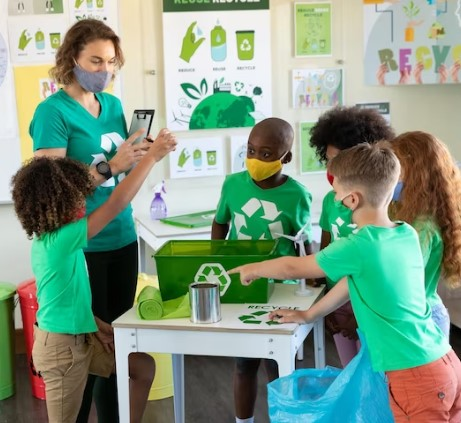
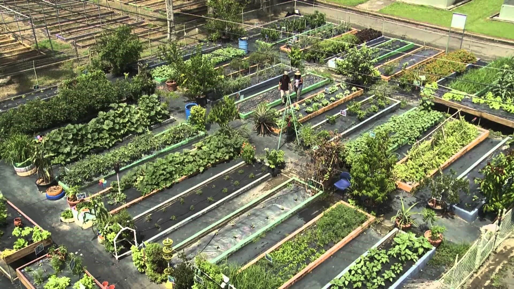

Nuestros programas

Educación Ambiental en Escuelas
Descripción: El objetivo de este programa es generar conciencia ambiental en estudiantes mediante talleres, charlas y actividades prácticas sobre reciclaje, cuidado del ambiente y cambio climático.
Dirigido a: Estudiantes de nivel primario y secundario.
Cómo participar: Las escuelas pueden contactarnos por correo electrónico para coordinar actividades educativas.

Reciclaje Comunitario
Descripción: Este programa promueve la separación de residuos y el reciclaje en barrios, fomentando hábitos sustentables en la comunidad y reduciendo el impacto ambiental.
Dirigido a: Vecinos y organizaciones sociales.
Cómo participar: Podés sumarte como voluntario o participar en las campañas de recolección organizadas por la ONG.

Huertas Urbanas Sustentables
Descripción: Impulsamos la creación de huertas urbanas para promover la producción de alimentos saludables y el contacto con la naturaleza en entornos urbanos.
Dirigido a: Familias, escuelas y comunidades.
Cómo participar: Ofrecemos talleres gratuitos donde enseñamos a crear y mantener una huerta en casa o en espacios comunitarios.